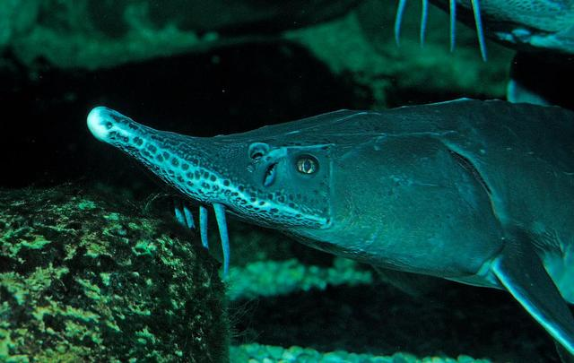

生物介紹：
尖吻鱘（學名：Acipenser oxyrhynchus oxyrhynchus），又名大西洋鱘（Atlantic sturgeon）是鱘科下的一個物種，也是世界上最古老的一種魚。它們的壽命可以達60歲，長達4.6米及重超過360公斤，是世界最大的淡水魚之一。尖吻鱘沒有鱗片，只有5行骨質的甲板。最大的標本可以重超過360公斤及接近4.6米長，一般則重130公斤及長1.8-2.4米。它們背部呈藍黑色及橄欖綠色，腹部白色。其吻較長，口邊各有4條鬚。
分布：
它們分布在加拿大新不倫瑞克省至美國佛羅里達州東岸。
原因：
美洲最初的殖民時期，它們的數量仍很豐富，但因過度漁獵及水質污染，以致數量大幅下降。它們現時已被列為近危，在有些地區甚至已經滅絕。
(保育) 由於長期的過度漁獵，尖吻鱘現時為瀕危物種，其保育主要是靠禁止捕獵。美國政府並沒有將尖吻鱘列為全國性瀕危。不過有很多團體都留意它們受危的狀況，但卻沒有足夠資料將之列入保育範圍。